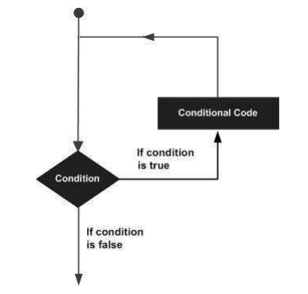
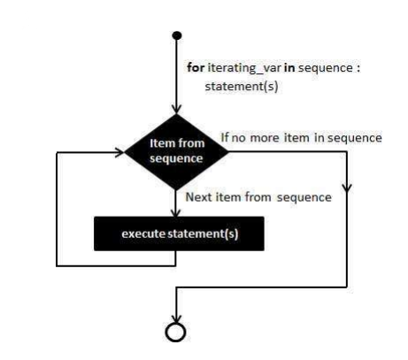
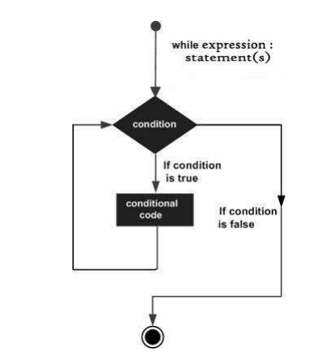
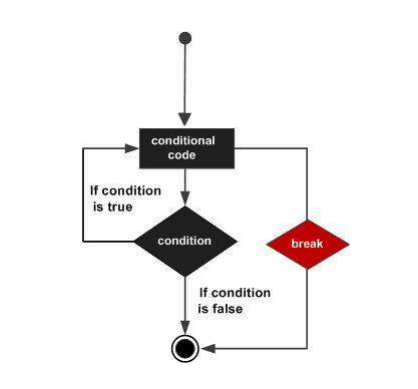
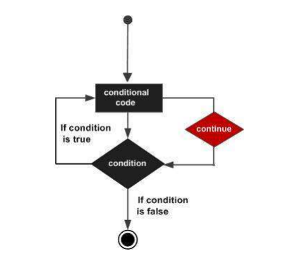

If Statements
An "if statement" allows you to execute a block of code if a specified condition is true.
If the condition is false, the block of code is skipped. The basic syntax of an "if statement" is as follows:
# Code to execute when the condition is true
if condition:
# logic
pass
Here's an example of an "if statement" in action:
age = 25
if age >= 18:
print("You are an adult.")
In this example,
the condition `age >= 18` is true (since `age` is 25),
so the code block following the "if statement" is executed, and "You are an adult." is printed to the console.
Indentation
In Python, indentation is used to define code blocks. Indentation is essential for the proper functioning of "if statements." The code inside the "if" block must be indented to the same level, and it's typically indented with four spaces.
if condition:
# This code is inside the if block
# It is indented with four spaces
print("Condition is true")
# This code is outside the if block
Else Statements
You can extend the "if statement" with an "else statement" to provide an alternative code block to execute when the condition is false. The basic syntax is:
if condition:
# Code to execute when the condition is true
else:
# Code to execute when the condition is false
Here's an example with an "if" and "else" statement:
age = 15
if age >= 18:
print("You are an adult.")
else:
print("You are a minor.")
In this case, since the `age` is 15 (which is less than 18), the "if" block is skipped, and the "else" block is executed, printing "You are a minor."
Elif Statements
You can handle multiple conditions using "elif" (short for "else if") statements.
"Elif" allows you to test additional conditions after the initial "if" condition. Here's the syntax:
if condition1:
# Code to execute when condition1 is true
elif condition2:
# Code to execute when condition2 is true
else:
# Code to execute when all conditions are false
Here's an example with "if," "elif," and "else" statements:
temperature = 25
if temperature > 30:
print("It's hot outside.")
elif temperature > 20:
print("It's a pleasant day.")
else:
print("It's cool outside.")
In this example, the code inside the "elif" block is executed because the temperature (25) falls between the conditions of the "if" and "else" statements.
Nested If Statements
You can nest "if statements" within other "if statements" to create more complex decision-making structures.
x = 10
y = 5
if x > 5:
if y > 2:
print("Both conditions are true.")
In this example,
the inner "if" statement is only executed if the outer "if" condition is true and the inner "if" condition is also true.
Comparison Operators
When using "if statements," you often use comparison operators to compare values. Common comparison operators in Python include:
- `==` (equal)
- `!=` (not equal)
- `>` (greater than)
- `<` (less than)
- `>=` (greater than or equal to)
- `<=` (less than or equal to)
| Operator | Description | Example |
| == | If the values of two operands are equal, then the condition becomes true | (a == b) is not true. |
| != | If values of two operands are not equal, then condition becomes true. | (a!= b) is true. |
| > | If the value of left operand is greater than the value of right operand, then condition becomes true. | (a > b) is not true. |
| < | If the value of left operand is less than the value of right operand, then condition becomes true. | (a < b) is true. |
| >= | If the value of left operand is greater than or equal to the value of right operand, then condition becomes true. | (a >= b) is not true. |
| <= | If the value of left operand is less than or equal to the value of right operand, then condition becomes | (a <= b) is true |
#!/usr/bin/python3
a = 21
b = 10
if ( a == b ):
print ("Line 1 - a is equal to b")
else:
print ("Line 1 - a is not equal to b")
if ( a != b ):
print ("Line 2 - a is not equal to b")
else:
print ("Line 2 - a is equal to b")
if ( a < b ):
print ("Line 3 - a is less than b" )
else:
print ("Line 3 - a is not less than b")
if ( a > b ):
print ("Line 4 - a is greater than b")
else:
print ("Line 4 - a is not greater than b")
a, b = b, a #values of a and b swapped. a becomes 10, b becomes 21
if ( a <= b ):
print ("Line 5 - a is either less than or equal to b")
else:
print ("Line 5 - a is neither less than nor equal to b")
if ( b >= a ):
print ("Line 6 - b is either greater than or equal to b")
else:
print ("Line 6 - b is neither greater than nor equal to b")
Assignment Operators
| Operator | Description | Example |
| = | Assigns values from right side operands to left side operand | c = a + b assigns value of a + b into c |
| += Add AND | It adds right operand to the left operand and assign the result to left operand | c += a is equivalent to c = c + a |
| -= Subtract AND | It subtracts right operand from the left operand and assign the result to left operand | c -= a is equivalent to c = c - a |
| *= Multiply AND | It multiplies right operand with the left operand and assign the result to left operand | c *= a is equivalent to c = c * a |
| /= Divide AND | It divides left operand with the right operand and assign the result to left operand | c /= a is equivalent to c = c / ac /= a is equivalent to c = c / a |
| %= Modulus AND | It takes modulus using two operands and assign the result to left operand | c %= a is equivalent to c = c % a |
| **= Exponent AND | Performs exponential (power) calculation on operators and assign value to the left operand | c **= a is equivalent to c = c ** a |
| //= Floor Division | It performs floor division on operators and assign value to the left operand | c //= a is equivalent to c = c // a |
#!/usr/bin/python3
a = 21
b = 10
c = 0
c = a + b
print ("Statement 1 - Value of c is ", c)
c += a
print ("Statement 2 - Value of c is ", c )
c *= a
print ("Statement 3 - Value of c is ", c )
c /= a
print ("Statement 4 - Value of c is ", c )
c = 2
c %= a
print ("Statement 5 - Value of c is ", c)
c **= a
print ("Statement 6 - Value of c is ", c)
c //= a
print ("Statement 7 - Value of c is ", c)
Python Bitwise Operators
Bitwise operator works on bits and performs bit-by-bit operation. Assume if a = 60; and b = 13; Now in binary format they will be as follows
a = 0011 1100
b = 0000 1101
-----------------
a&b = 0000 1100
a|b = 0011 1101
a^b = 0011 0001
~a = 1100 0011
Python's built-in function bin() can be used to obtain binary representation of an integer number.
The following Bitwise operators are supported by Python language
| Operator | Description | Example |
| & Binary AND | Operator copies a bit to the result, if it exists in both operands. | (a & b) (means 0000 1100) |
| | Binary OR | It copies a bit, if it exists in either operand. | (a | b) = 61 (means 0011 1101) |
| ^ Binary XOR | It copies the bit, if it is set in one operand but not both. | (a ^ b) = 49 (means 0011 0001) |
| ~ Binary Ones Complement | It is unary and has the effect of 'flipping' bits. | (~a ) = -61 (means 1100 0011 in 2's complement form due to a signed binary number.) |
| << Binary Left Shift | The left operand's value is moved left by the number of bits specified by the right operand. | a << = 240 (means 1111 0000) |
| >> Binary Right Shift | The left operand's value is moved right by the number of bits specified by the right operand. | a >> = 15 (means 0000 1111) |
#!/usr/bin/python3
a = 60 # 60 = 0011 1100
b = 13 # 13 = 0000 1101
print ('a=',a,':',bin(a),'b=',b,':',bin(b))
c = 0
c = a & b; # 12 = 0000 1100
print ("result of AND is ", c,':',bin(c))
c = a | b; # 61 = 0011 1101
print ("result of OR is ", c,':',bin(c))
c = a ^ b; # 49 = 0011 0001
print ("result of EXOR is ", c,':',bin(c))
c = ~a; # -61 = 1100 0011
print ("result of COMPLEMENT is ", c,':',bin(c))
c = a << 2; # 240 = 1111 0000
print ("result of LEFT SHIFT is ", c,':',bin(c))
c = a >> 2; # 15 = 0000 1111
print ("result of RIGHT SHIFT is ", c,':',bin(c))
When you execute the above program, it produces the following result :
a= 60 : 0b111100 b= 13 : 0b1101
result of AND is 12 : 0b1100
result of OR is 61 : 0b111101
result of EXOR is 49 : 0b110001
result of COMPLEMENT is -61 : -0b111101
result of LEFT SHIFT is 240 : 0b11110000
result of RIGHT SHIFT is 15 : 0b111
Logical Operators
| Operator | Description | Example |
| and Logical AND | If both the operands are true then condition becomes true | (a and b) is False. |
| or Logical OR | If any of the two operands are non-zero then condition becomes true. | (a or b) is True. |
| not Logical NOT | Used to reverse the logical state of its operand. | Not(a and b) is True. |
You can use logical operators like "and," "or," and "not" to combine multiple conditions in your "if statements."
x = 5
y = 10
if x > 3 and y < 20:
print("Both conditions are true.")
In this example,
both conditions must be true for the code inside the "if" block to execute.
Python Membership Operators
Python’s membership operators test for membership in a sequence, such as strings, lists, or tuples. There are two membership operators as explained below
| Operator | Description | Example |
| in | Evaluates to true, if it finds a variable in the specified sequence and false otherwise. | x in y, here in results in a 1 if x is a member of sequence y. |
| not in | Evaluates to true, if it does not find a variable in the specified sequence and false otherwise. | x not in y, here not in results in a 1 if x is not a member of sequence y. |
#!/usr/bin/python3
a = 10
b = 20
list = [1, 2, 3, 4, 5 ]
if ( a in list ):
print ("Line 1 - a is available in the given list")
else:
print ("Line 1 - a is not available in the given list")
if ( b not in list ):
print ("Line 2 - b is not available in the given list")
else:
print ("Line 2 - b is available in the given list")
c=b/a
if ( c in list ):
print ("Line 3 - a is available in the given list")
else:
print ("Line 3 - a is not available in the given list")
When you execute the above program, it produces the following result :
Line 1 - a is not available in the given list
Line 2 - b is not available in the given list
Line 3 - a is available in the given list
Python Identity Operators
Identity operators compare the memory locations of two objects. There are two Identity operators as explained below
| Operator | Description | Example |
| is | Evaluates to true if the variables on either side of the operator point to the same object and false otherwise. | x is y, here is results in 1 if id(x) equals id(y). |
| is not | Evaluates to false if the variables on either side of the operator point to the same object and true otherwise. | x is not y, here is not results in 1 if id(x) is not equal to id(y). |
#!/usr/bin/python3
a = 20
b = 20
print ('Line 1','a=',a,':',id(a), 'b=',b,':',id(b))
if ( a is b ):
print ("Line 2 - a and b have same identity")
else:
print ("Line 2 - a and b do not have same identity")
if ( id(a) == id(b) ):
print ("Line 3 - a and b have same identity")
else:
print ("Line 3 - a and b do not have same identity")
b = 30
print ('Line 4','a=',a,':',id(a), 'b=',b,':',id(b))
if ( a is not b ):
print ("Line 5 - a and b do not have same identity")
else:
print ("Line 5 - a and b have same identity")
When you execute the above program, it produces the following result :
Line 1 a= 20 : 1594701888 b= 20 : 1594701888
Line 2 - a and b have same identity
Line 3 - a and b have same identity
Line 4 a= 20 : 1594701888 b= 30 : 1594702048
Line 5 - a and b do not have same identity
Python Operators Precedence
The following table lists all the operators from highest precedence to the lowest.
| Operator | Description |
| ** | Exponentiation (raise to the power) |
| ~ + - | Complement, unary plus and minus (method names for the last two are +@ and -@) |
| * / % // | Multiply, divide, modulo and floor division |
| + - | Addition and Subtraction |
| >> << | Right and left bitwise shift |
| & | Bitwise 'AND' |
| ^| | Bitwise exclusive 'OR' and regular 'OR' |
| <= <> >= | Comparison operators |
| <> == != | Equality operators |
| = %= /= //= -= += *= **= | Assignment operators |
| is is not | Identity operators |
| in not in | Membership operators |
| not or and | Logical operators |
Operator precedence affects the evaluation of an an expression.
For example, x = 7 + 3 * 2; here, x is assigned 13, not 20 because the operator * has
higher precedence than +, so it first multiplies 3*2 and then is added to 7.
Here, the operators with the highest precedence appear at the top of the table, those with
the lowest appear at the bottom.
#!/usr/bin/python3
a = 20
b = 10
c = 15
d = 5
print ("a:%d b:%d c:%d d:%d" % (a,b,c,d ))
e = (a + b) * c / d #( 30 * 15 ) / 5
print ("Value of (a + b) * c / d is ", e)
e = ((a + b) * c) / d # (30 * 15 ) / 5
print ("Value of ((a + b) * c) / d is ", e)
e = (a + b) * (c / d) # (30) * (15/5)
print ("Value of (a + b) * (c / d) is ", e)
e = a + (b * c) / d # 20 + (150/5)
print ("Value of a + (b * c) / d is ", e)
When you execute the above program, it produces the following result :
a:20 b:10 c:15 d:5
Value of (a + b) * c / d is 90.0
Value of ((a + b) * c) / d is 90.0
Value of (a + b) * (c / d) is 90.0
Value of a + (b * c) / d is 50.0
In Summary :
"if statements" allow you to make decisions in your Python code based on specified conditions.
They are the building blocks for creating more complex control flow structures, including loops and functions.
Using "if," "elif," and "else" statements, you can control the execution of code in your programs based on a wide range of conditions.
This section introduces "if statements" and basic control flow in Python, which is crucial for making decisions and executing code conditionally. It also covers "else," "elif," and nested "if" statements, as well as comparison and logical operators.
Loops in Python
In general, statements are executed sequentially- The first statement in a function is executed first, followed by the second, and so on. There may be a situation when you need to execute a block of code several number of times.
Programming languages provide various control structures that allow more complicated execution paths.
A loop statement allows us to execute a statement or group of statements multiple times. The following diagram illustrates a loop statement.
| Loop Type | Description |
| while loop | Repeats a statement or group of statements while a given condition is TRUE. It tests the condition before executing the loop body. |
| for loop | Executes a sequence of statements multiple times and abbreviates the code that manages the loop variable. |
| nested loops | You can use one or more loop inside any another while, or for loop. |
Python programming language provides the following types of loops to handle looping requirements.
For Loops:
A "for loop" is used to iterate over a sequence (such as a list, tuple, or string) or other iterable objects. The loop runs for each item in the sequence until there are no more items. The basic syntax of a "for loop" is as follows:
for variable in iterable:
# Code to execute for each item in the iterable
Flow Diagram
Here's an example of a "for loop" that iterates over a list of numbers:
numbers = [1, 2, 3, 4, 5]
for number in numbers:
print(number)
In this example, the "for loop" iterates over the list "numbers" and prints each number.
Range Function
The `range()` function is often used with "for loops" to generate a sequence of numbers.
It can be used to specify the number of iterations in a loop.
for i in range(5):
print(i)
In this case, the loop runs from 0 to 4, and the numbers are printed accordingly.
range() generates an iterator to progress integers starting with 0 upto n-1. To obtain a list object of the sequence, it is typecasted to list(). Now this list can be iterated using the for statement.
for var in list(range(5)):
print (var)
Example :
#!/usr/bin/python3
for letter in 'Python': # traversal of a string sequence
print ('Current Letter :', letter)
print()
fruits = ['banana', 'apple', 'mango']
for fruit in fruits: # traversal of List sequence
print ('Current fruit :', fruit)
print ("Good bye!")
When you execute the above program, it produces the following result :
Current Letter : P
Current Letter : y
Current Letter : t
Current Letter : h
Current Letter : o
Current Letter : n
Current fruit : banana
Current fruit : apple
Current fruit : mango
Good bye!
Iterating by Sequence Index
An alternative way of iterating through each item is by index offset into the sequence
itself.
Following is a simple example :
#!/usr/bin/python3
fruits = ['banana', 'apple', 'mango']
for index in range(len(fruits)):
print ('Current fruit :', fruits[index])
print ("Good bye!")
When you execute the above program, it produces the following result :
Current fruit : banana
Current fruit : apple
Current fruit : mango
Good bye!
Here, we took the assistance of the len() built-in function, which provides the total number of elements in the tuple as well as the range() built-in function to give us the actual sequence to iterate over
Using else Statement with Loops
Python supports having an else statement associated with a loop statement.
- If the else statement is used with a for loop, the else block is executed only if for loops terminates normally (and not by encountering break statement).
- If the else statement is used with a while loop, the else statement is executed when the condition becomes false.
The following example illustrates the combination of an else statement with a for statement that searches for even number in given list.
#!/usr/bin/python3
numbers=[11, 33, 55, 39, 55, 75, 37, 21, 23, 41, 13]
for num in numbers:
if num%2==0:
print ('the list contains an even number')
break
else:
print ('the list doesnot contain even number')
When you execute the above program, it produces the following result :
the list does not contain even number
While Loops:
A "while loop" repeatedly executes a block of code as long as a specified condition is true. The basic syntax of a "while loop" is as follows:
while condition:
# Code to execute while the condition is true
Flow Diagram
Here's an example of a "while loop" that counts from 1 to 5:
count = 1
while count <= 5:
print(count)
count += 1
The "while loop" continues to execute as long as the condition `count <= 5` is true.
Infinite Loops:
Be cautious when using "while loops" to ensure that the condition eventually becomes false. If not, you may create an infinite loop, which can crash your program.
A loop becomes infinite loop if a condition never becomes FALSE. You must be cautious when using while loops because of the possibility that this condition never resolves to a FALSE value. This results in a loop that never ends. Such a loop is called an infinite loop.
An infinite loop might be useful in client/server programming where the server needs to run continuously so that client programs can communicate with it as and when required.
#!/usr/bin/python3
var = 1
while var == 1 : # This constructs an infinite loop
num = int(input("Enter a number :"))
print ("You entered: ", num)
print ("Good bye!")
When you execute the above program, it produces the following result :
Enter a number :20
You entered: 20
Enter a number :29
You entered: 29
Enter a number :3
You entered: 3
Enter a number :11
You entered: 11
Enter a number :22
You entered: 22
Enter a number :Traceback (most recent call last):
File "examples\test.py", line 5, in
num = int(input("Enter a number :"))
KeyboardInterrupt
The above example goes in an infinite loop and you need to use CTRL+C to exit the program.
Using else Statement with Loops
Python supports having an else statement associated with a loop statement.
- If the else statement is used with a for loop, the else statement is executed when the loop has exhausted iterating the list.
- If the else statement is used with a while loop, the else statement is executed when the condition becomes false.
The following example illustrates the combination of an else statement with a while statement that prints a number as long as it is less than 5, otherwise the else statement gets executed.
#!/usr/bin/python3
count = 0
while count < 5:
print (count, " is less than 5")
count = count + 1
else:
print (count, " is not less than 5")
When you execute the above program, it produces the following result :
0 is less than 5
1 is less than 5
2 is less than 5
3 is less than 5
4 is less than 5
5 is not less than 5
Single StatementSuites
Similar to the if statement syntax, if your while clause consists only of a single statement, it may be placed on the same line as the while header
Here is the syntax and example of a one-line while clause
#!/usr/bin/python3
flag = 1
while (flag): print ('Given flag is really true!')
print ("Good bye!")
The above example goes into an infinite loop and you need to press CTRL+C keys to exit.
Loop Control
The Loop control statements change the execution from its normal sequence. When the execution leaves a scope, all automatic objects that were created in that scope are destroyed.
| Loop Type | Description |
| break statement | Terminates the loop statement and transfers execution to the statement immediately following the loop. |
| continue statement | Causes the loop to skip the remainder of its body and immediately retest its condition prior to reiterating. |
| pass statement | The pass statement in Python is used when a statement is required syntactically but you do not want any command or code to execute. |
You can control the flow of loops using various statements:
- `break`: Terminates the loop prematurely and moves to the next block of code.
- `continue`: Skips the current iteration and moves to the next iteration.
- `else` with Loops: You can add an "else" block after a loop.
The "else" block is executed when the loop completes without encountering a `break` statement.
for number in numbers:
if number == 3:
break
print(number)
else:
print("Loop completed without encountering a break statement.")
Nested Loops:
Python programming language allows the use of one loop inside another loop. The following section shows a few examples to illustrate the concept.
You can nest loops inside each other to create more complex iterations.
For example, you can use a "for loop" within another "for loop" to work with two-dimensional data.
Syntax
for iterating_var in sequence:
for iterating_var in sequence:
statements(s)
statements(s)
The syntax for a nested while loop statement in Python programming language is as follows :
while expression:
while expression:
statement(s)
statement(s)
A final note on loop nesting is that you can put any type of loop inside any other type of loop. For example a for loop can be inside a while loop or vice versa.
Example 1:
for i in range(3):
for j in range(3):
print(f"({i}, {j})")
Example 2:
#!/usr/bin/python3
import sys
for i in range(1,11):
for j in range(1,11):
k = i*j
print (k, end=' ')
print()
The print() function inner loop has end=' ' which appends a space instead of default newline. Hence, the numbers will appear in one row.
Looping with Strings:
Loops are commonly used to iterate through characters in a string.
text = "Hello, World!"
for char in text:
print(char)
In summary, "for loops" and "while loops" are fundamental for controlling the flow of your Python programs.
They allow you to repeat code efficiently and work with various data structures and conditions.
This section covers "for loops" and "while loops" in Python, their syntax, use cases, loop control statements, and examples. Understanding loops is crucial for repetitive tasks and data processing in Python.
Indentation and Code Blocks:
In Python, indentation plays a crucial role in determining the structure and execution of your code.
Unlike many other programming languages that use braces or other symbols to define code blocks,
Python uses indentation to indicate the beginning and end of blocks. This feature makes Python code more readable and enforces a clean coding style.
Indentation Basics:
Defining Code Blocks:
- Indentation for Loops:
In "for loops" and "while loops," the indented code that follows the loop header is the code block to be executed for each iteration.
for i in range(5): # This code is part of the loop block print(i) - Indentation for Conditional Statements:
In "if," "else," and "elif" statements, the code block following the colon (`:`) is indented and executed when the condition is met.
if condition: # This code is executed when the condition is true print("Condition is true") - Indentation for Functions:
When defining functions, the code block inside the function is indented, and it is executed when the function is called.
def greet(name): # This code block is part of the function print("Hello, " + name) greet("Alice")
Consistent Indentation:
Consistency is critical. Python requires all statements within the same block to have the same level of indentation. Mixing spaces and tabs for indentation is not recommended, as it can lead to syntax errors.
No Curly Braces:
In many other programming languages, curly braces `{ }` are used to define code blocks.
Python, however, uses indentation instead. This helps maintain a clean and readable code structure.
Indentation Style:
There's no strict rule on the number of spaces to use for indentation, but it's recommended to use four spaces per level.
This is a common convention in the Python community.
Some code editors and integrated development environments (IDEs) can automatically format your code with the proper indentation.
Code Blocks with Multiple Levels:
When you have nested code blocks (code blocks within code blocks), each level of nesting requires an additional level of indentation.
for i in range(3):
# Outer loop block
for j in range(2):
# Inner loop block
print(i, j)
# Back to the outer loop block
In summary, understanding and using proper indentation is a fundamental aspect of Python programming. It defines the structure and execution of code blocks, making your code more readable and maintaining the intended logical flow of your program.
This section covers the importance of indentation and code blocks in Python, providing examples of how indentation is used with loops, conditional statements, and functions. It also emphasizes the need for consistent indentation and clean coding practices.
break, continue and pass Statements:
In Python, the "break" and "continue" statements are used to control the flow of loops, allowing you to modify the default behavior of looping constructs like "for loops" and "while loops."
- break Statement:
The "break" statement is used to prematurely exit a loop when a certain condition is met. After abandoning the loop, execution at the next statement is resumed, just like the traditional break statement in C.
It is often used to terminate a loop when a specific situation or event occurs, even if the loop's conditions are not met.
Here's how the "break" statement works:The most common use of break is when some external condition is triggered requiring a hasty exit from a loop. The break statement can be used in both while and for loops.
If you are using nested loops, the break statement stops the execution of the innermost loop and starts executing the next line of the code after the block
for item in iterable: if condition: break # Code here is skipped when "break" is executedExample:
numbers = [1, 2, 3, 4, 5, 6, 7, 8, 9, 10] for number in numbers: if number == 5: break print(number) # Output: 1 2 3 4#!/usr/bin/python3 # First Example with 'for' loop for letter in 'Python': if letter == 'h': break print ('Current Letter :', letter) # Second Example with 'while' loop var = 10 while var > 0: print ('Current variable value :', var) var = var -1 if var == 5: break print ("Good bye!")In this example,
the "break" statement is triggered when the loop reaches the number 5, and the loop is terminated. - continue Statement:
The "continue" statement is used to skip the current iteration of a loop and move to the next iteration when a certain condition is met. It allows you to avoid executing some code within the loop for specific items or conditions. Here's how the "continue" statement works:
The continue statement can be used in both while and for loops.
for item in iterable: if condition: continue # Code here is skipped for items that meet the "continue" conditionExample:
numbers = [1, 2, 3, 4, 5, 6, 7, 8, 9, 10] for number in numbers: if number % 2 == 0: continue print(number) # Output: 1 3 5 7 9In this example,
the "continue" statement is used to skip even numbers, and only odd numbers are printed. - pass Statement:
It is used when a statement is required syntactically but you do not want any command or code to execute.
The pass statement is a null operation; nothing happens when it executes. The pass statement is also useful in places where your code will eventually go, but has not been written yet i.e. in stubs.
Example:
#!/usr/bin/python3 for letter in 'Python': if letter == 'h': pass print ('This is pass block') print ('Current Letter :', letter) print ("Good bye!")
Use Cases:
- "Break" and "continue" statements are often used within loops to control program flow based on specific conditions.
- "Break" is useful when you need to exit a loop prematurely, such as when you find the item you're looking for in a list.
- "Continue" is helpful when you want to skip certain iterations, like filtering out specific elements in a loop.
- These statements are commonly used in conjunction with conditional statements (e.g., "if" statements) to determine when to apply them.
Nested Loops:
Both "break" and "continue" statements can be used with nested loops. When used within nested loops, they affect the innermost loop.
for i in range(3):
for j in range(3):
if i == 1 and j == 1:
break # This breaks out of the inner loop only
print(i, j)
In summary, "break" and "continue" statements are valuable tools for controlling the flow of loops in Python. They allow you to exit loops prematurely or skip specific iterations based on conditions, providing flexibility and fine-grained control over loop execution.